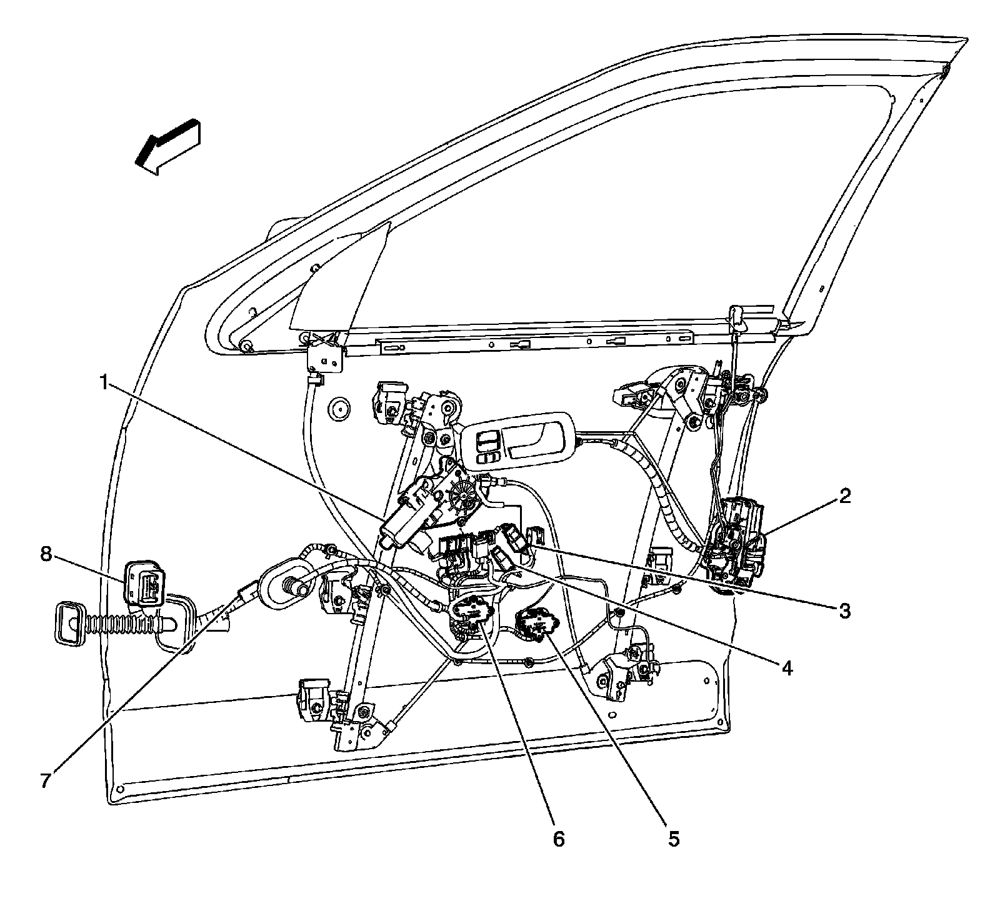
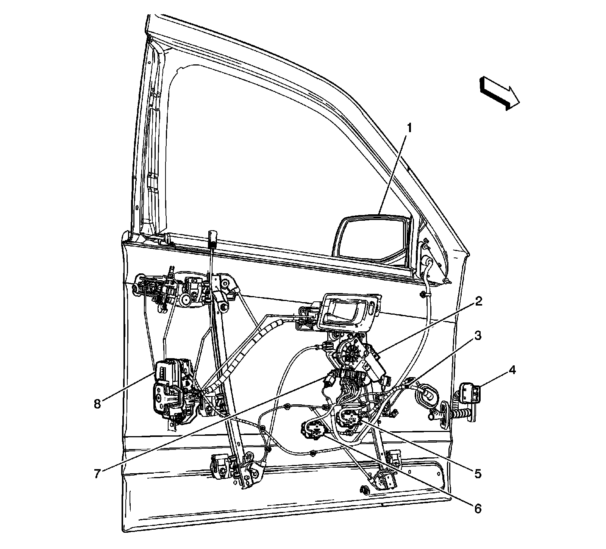
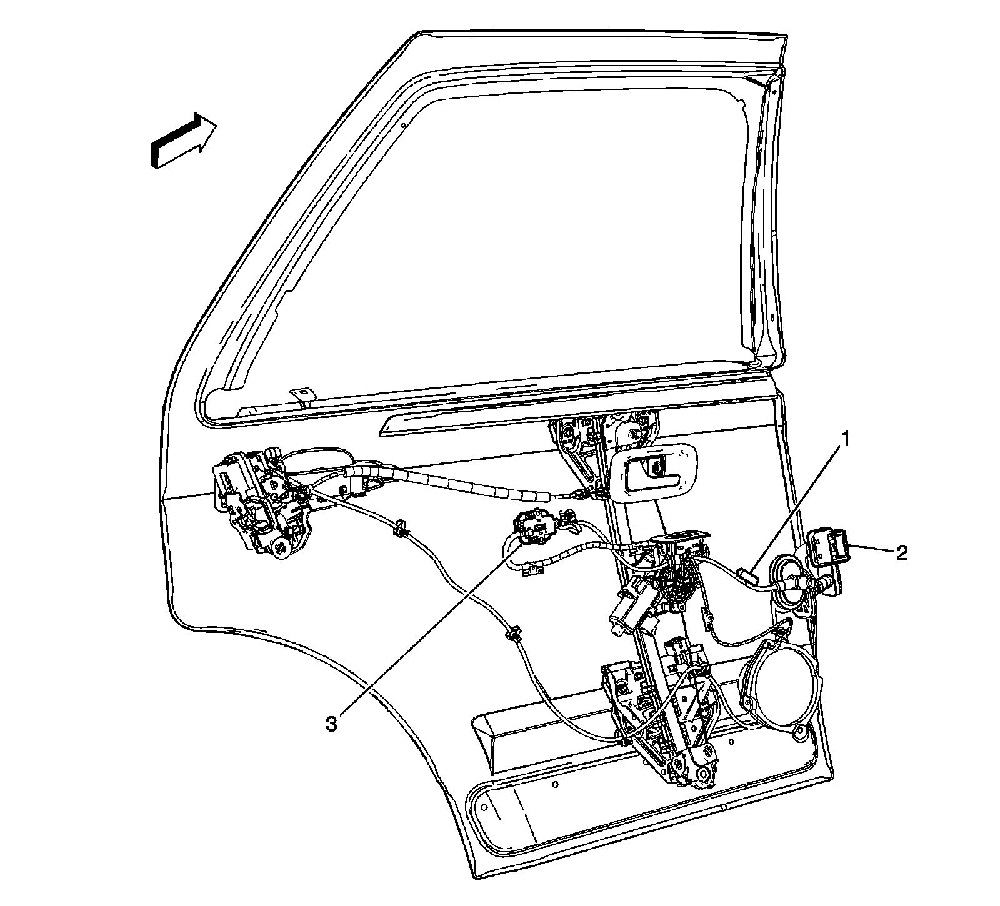
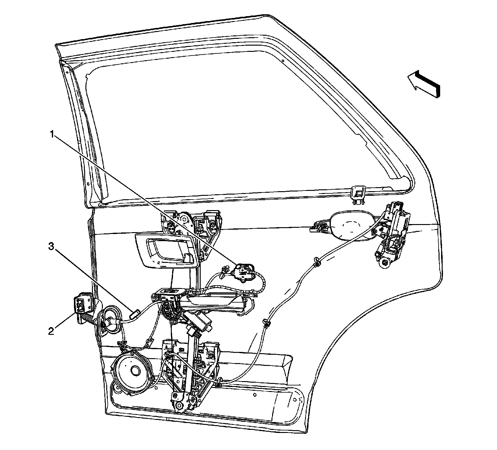
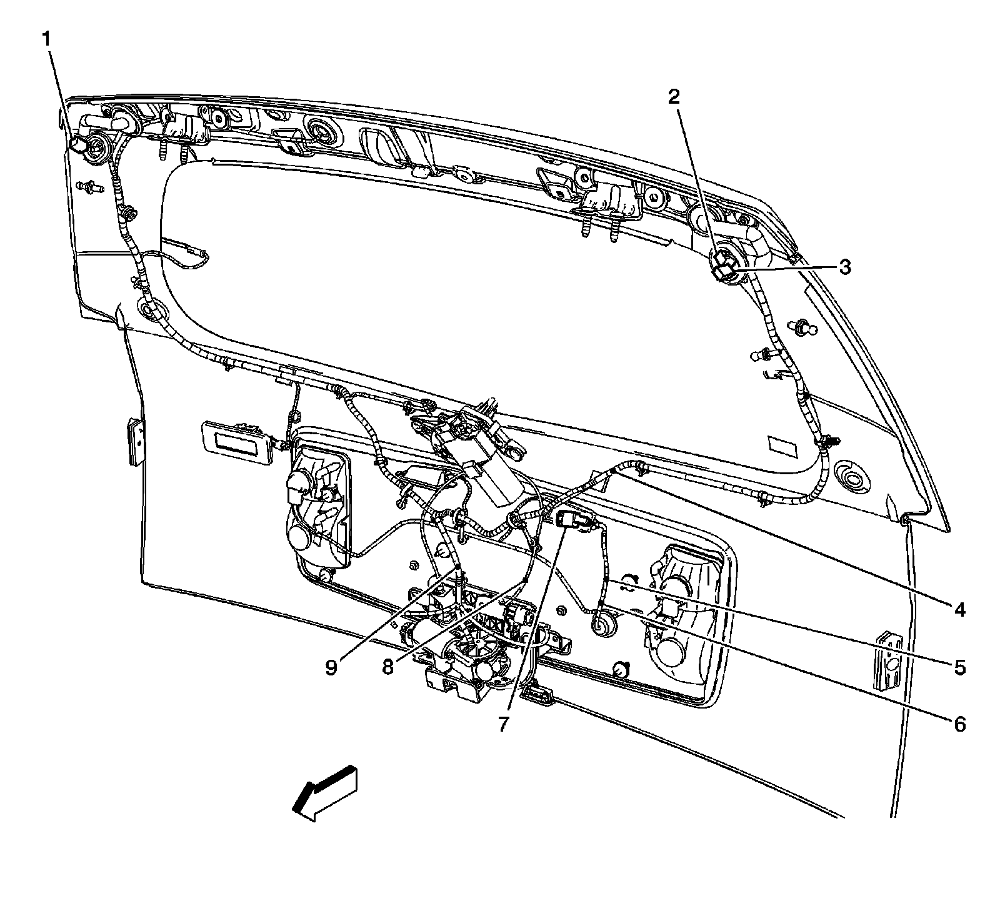
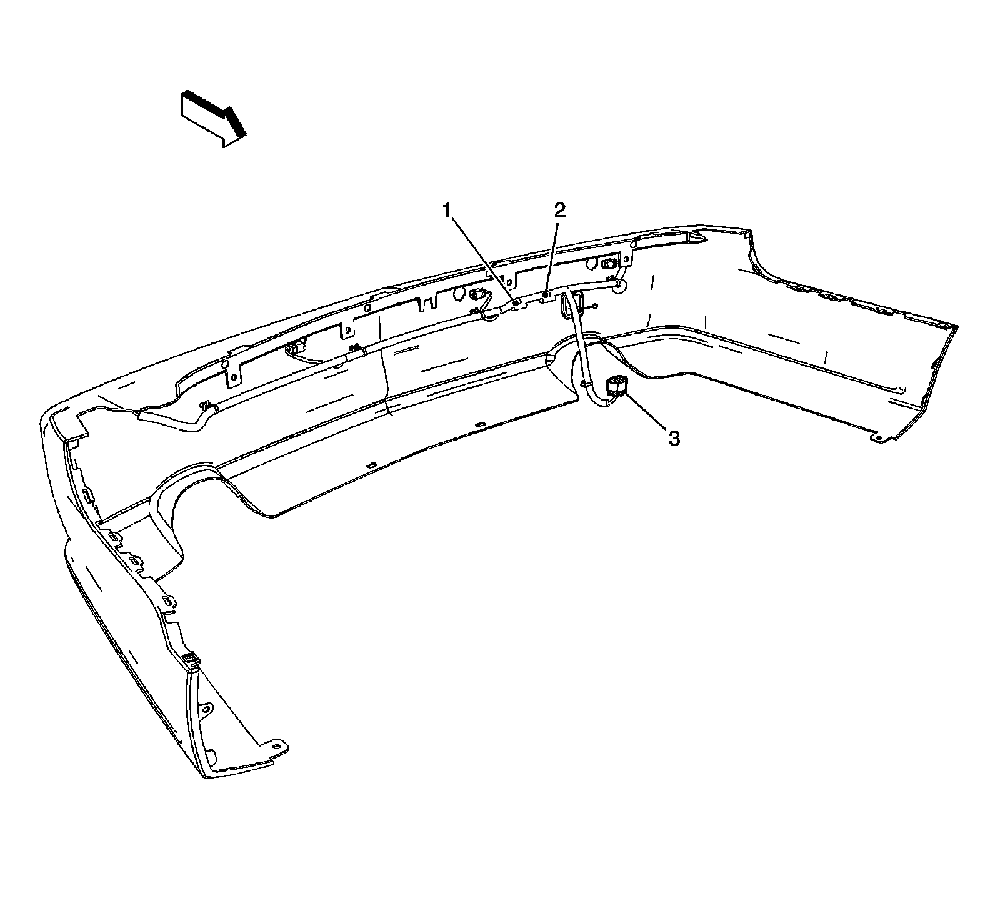

RHD
Harness Routing Views (RHD)
Driver Door Harness Routing Components

1 - Window Motor
2 - Door Latch Assembly
3 - Outside Rearview Mirror X2
4 - Outside Rearview Mirror X1
5 - X602
6 - X601
7 - J601
8 - X600
Passenger Door Harness Routing Components

1 - Outside Rearview Mirror
2 - Window Motor
3 - J501
4 - X500
5 - X501
6 - X502
7 - Outside Rearview Mirror Connector
8 - Door Latch Assembly
Left Rear Passenger Door

1 - J701
2 - X700
3 - X701
Right Rear Passenger Door

1 - X801
2 - X800
3 - J800
Liftgate/License Lamp Harness

1 - X401
2 - X403
3 - X404
4 - J902
5 - J903
6 - J909
7 - X901
8 - J904
9 - J901
Rear Fascia

1 - J414
2 - J413
3 - X402